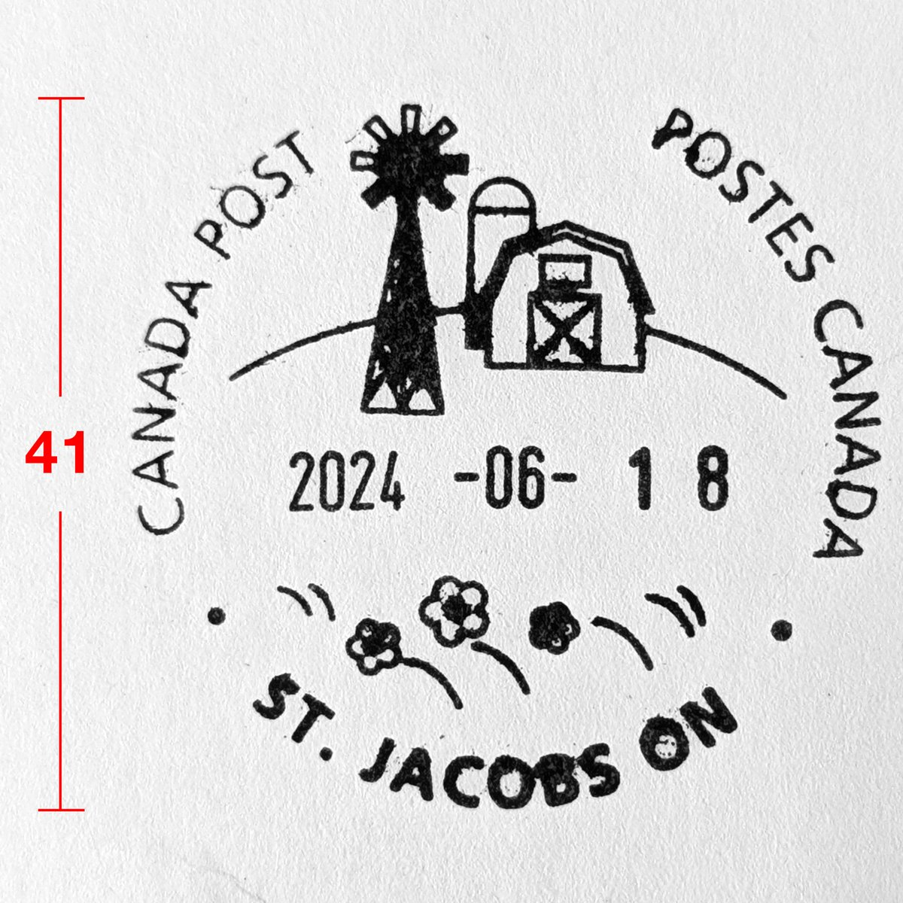

St. Jacobs PO pictorial cancel
Windmill, farm, flowers
- Status
- Active
- Run dates
- ? to present
- Design
- windmill, farm, flowers
- Ink colour
- Black
- Designer
- Unknown
- Post office
- St. Jacobs PO
1404 King St N
St. Jacobs, ON
N0B 2N0 - Subjects
- landscape, rural, farming
Collect it by mail. Send your stamped covers, with a stamped return envelope, to the post office address above. How to collect pictorial cancels by mail · en français
 Wellesley POWellesley Apple Butter & Cheese Festival / Est. 1975
Wellesley POWellesley Apple Butter & Cheese Festival / Est. 1975 Beachville POPost office
Beachville POPost office